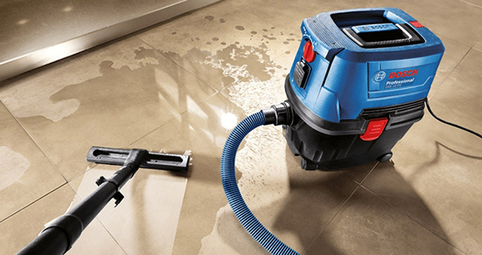
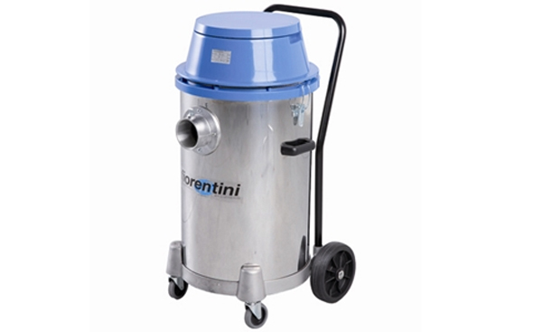
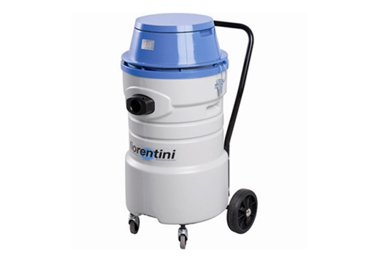
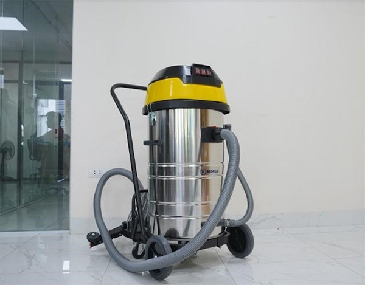
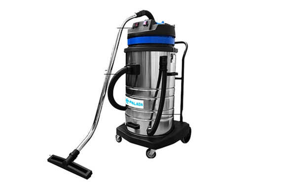
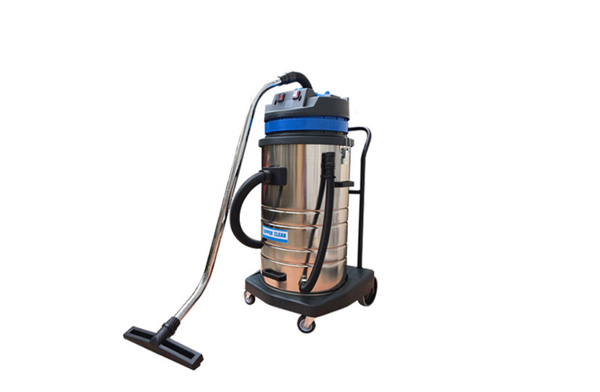

TOP 5 máy hút bụi công nghiệp 3000W bán chạy đáng đầu tư
Máy hút bụi công nghiệp 3000W thuộc dòng máy tầm trung, được sử dụng phổ biến tại các tiệm rửa xe và nhà xưởng có quy mô vừa và nhỏ. Với khả năng mang lại sự tiện lợi và hiệu quả vượt trội, máy hút bụi công nghiệp 3000W trở thành lựa chọn hàng đầu cho các không gian lớn như nhà xưởng, bệnh viện và khách sạn. Dưới đây là những model máy hút bụi 3000W đang được ưa chuộng nhất hiện nay.
Vì sao máy hút bụi công nghiệp 3000W được lựa chọn nhiều?
Máy hút bụi công nghiệp 3000W được nhiều đơn vị lựa chọn sử dụng bởi có nhiều tính năng vượt trội. Sản phẩm có khả năng loại bỏ chất bẩn mạnh mẽ, đem lại hiệu quả cao. Hơn nữa, máy hút bụi có công suất lớn, giúp người sử dụng tiết kiệm thời gian và công sức khi làm việc:
- Hiệu suất làm việc cao: Công suất lớn giúp máy hút bụi nhanh chóng và hiệu quả, giảm thiểu thời gian và công sức cho người sử dụng.
- Độ bền và độ chất lượng: Với thiết kế bền bỉ và khả năng làm việc liên tục, máy hút bụi công nghiệp 3000W đảm bảo hiệu suất ổn định và tuổi thọ cao.
- Tiện lợi và linh hoạt: Thiết kế gọn gàng, bánh xe di chuyển linh hoạt, cùng với khả năng hút đa dạng các loại bụi bẩn và rác thải, máy hút bụi này đáp ứng tốt nhu cầu của các nhà xưởng, tiệm rửa xe và các không gian công nghiệp khác.

Máy hút bụi công nghiệp 3000W được ưa chuộng sử dụng cho các không gian lớn
Khả năng của máy hút bụi 3000W
Bên cạnh công suất mạnh mẽ, bền bỉ và hiệu suất làm việc cao thì máy hút bụi công nghiệp 3000W còn được nhiều đơn vị lựa chọn vì có tính năng vượt trội. Dưới đây là các tính năng của máy hút bụi công nghiệp 3000W:
- Hút bụi khô: Máy hút bụi 3000W có khả năng hút bụi khô một cách hiệu quả, giúp loại bỏ các loại bụi bẩn thông thường như bụi, mảnh vụn và rác nhỏ trên sàn nhà xưởng, văn phòng và các không gian công nghiệp khác.
- Hút bụi ướt: Ngoài bụi khô, máy hút bụi 3000W còn được trang bị tính năng hút bụi ướt, giúp xử lý bụi bẩn bám dính cùng các chất lỏng đổ ra sàn như nước, dầu và các dung dịch khác.
- Tính năng thổi: Một số model máy hút bụi công nghiệp 3000W tích hợp tính năng thổi, giúp thổi bụi, lá cây và các loại rác thải nhẹ ra khỏi các khe hẹp hoặc các khu vực khó tiếp cận. Tính năng này rất hữu ích trong việc làm sạch nhanh chóng và hiệu quả.

Máy hút bụi 3000W còn có khả năng hút bụi ướt mạnh mẽ
- Chế độ khử mùi: Một số máy hút bụi 3000W hiện đại có tích hợp chế độ khử mùi, giúp loại bỏ các mùi hôi khó chịu trong không gian làm việc. Điều này đặc biệt quan trọng trong các nhà xưởng hoặc không gian kín, giúp cải thiện chất lượng không khí và môi trường làm việc.
- Hệ thống lọc hiệu quả: Máy hút bụi công nghiệp 3000W thường được trang bị hệ thống lọc tiên tiến bao gồm bộ lọc HEPA hoặc các bộ lọc chất lượng cao khác. Hệ thống lọc này giúp giữ lại các hạt bụi mịn, vi khuẩn và các chất gây dị ứng, đảm bảo không khí thải ra sạch sẽ và an toàn cho sức khỏe người sử dụng.
>>> Tìm hiểu thêm: Địa chỉ mua máy hút bụi công nghiệp công suất lớn
TOP 5 máy hút bụi công nghiệp 3000W
Máy hút bụi công nghiệp 3000W được biết đến với khả năng làm sạch mạnh mẽ và hiệu quả trong các không gian lớn. Dưới đây là danh sách 5 máy hút bụi công nghiệp 3000W được ưa chuộng nhất hiện nay.
Máy hút bụi Fiorentini F97F1
Máy hút bụi – nước Fiorentini F97F1 là một thiết bị đa dụng và mạnh mẽ, được thiết kế để đáp ứng nhu cầu vệ sinh trong các môi trường công nghiệp khắc nghiệt. Được sản xuất tại Italia, máy hút bụi F97F1 mang đến hiệu suất vượt trội và độ bền cao, phù hợp với nhiều ứng dụng khác nhau.

Sản phẩm máy hút bụi, hút nước Fiorentini F97F1
Đặc điểm nổi bật:
- Công suất mạnh mẽ lên đến 3000W (3 motor x 1000W) nên có khả năng hút bụi, hút nước siêu sạch.
- Thân máy làm từ chất liệu inox cao cấp không gỉ, bền bỉ trong mọi điều kiện thời tiết khắc nghiệt.
- Thiết kế linh hoạt với 4 bánh xe quay 180 độ, giúp di chuyển dễ dàng trên mọi địa hình.
- Thiết kế họng hút rộng giúp máy có khả năng hút tất cả các loại bụi và rác cỡ lớn, phù hợp với các nhà máy sản xuất, nhà máy xi-măng, nhà máy sản xuất đồ gỗ và các công trình xây dựng.
Thông số kỹ thuật:
| Model | F97F1 |
| Công suất động cơ | 3000W (3 motor x 1000W) |
| Lưu lượng hút | 425 m³/h |
| Độ nâng nước | 2500 mm |
| Dung tích thùng chứa | 75 lít |
| Phụ kiện ống hút | Ø50 mm |
| Chất liệu thùng chứa | Inox |
| Độ ồn | 81 dB |
| Kích thước máy | 65 x 60 x 95 mm |
| Trọng lượng máy | 23 kg |
| Phụ tùng kèm theo | Ống nhún và họng hút cỡ lớn |
| Xuất xứ | Italia |
Máy hút bụi Fiorentini C73F1
Máy hút bụi – nước Fiorentini model C73F1 là một thiết bị đa dụng phù hợp cho các nhà máy sản xuất, nhà máy xi-măng, nhà máy sản xuất gỗ và các công trình xây dựng. Máy có xuất xứ từ Italia.

Sản phẩm máy hút bụi công nghiệp 3000W Fiorentini C73F1
Máy có đặc điểm nổi bật như sau:
- Thân máy được làm từ nhựa PP bền bỉ, chống chịu va đập.
- Thiết kế với 04 bánh xe quay 180 độ, giúp di chuyển dễ dàng trên mọi địa hình.
- Họng hút lớn cho phép hút tất cả các loại bụi và rác cỡ lớn.
Thông số kỹ thuật:
| Model | C73F1 |
| Công suất động cơ | 3000W (3 motor x 1000W) |
| Lưu lượng hút | 645 m³/h |
| Dung tích thùng chứa | 75 lít |
| Phụ kiện ống hút | Ø40 mm |
| Chất liệu thùng chứa | Nhựa PP |
| Độ ồn | 83 dB |
| Trọng lượng máy | 23 kg |
| Phụ tùng kèm theo | Bàn hút nước, hút bụi, đầu chổi tròn, khe hút kẹt |
| Xuất xứ | Italia |
Máy hút bụi Kumisai KMS60-2Q
Máy hút bụi công nghiệp Kumisai KMS60-2Q là một lựa chọn lý tưởng cho các nhà xưởng, tiệm rửa xe và các môi trường công nghiệp khác. Với công suất mạnh mẽ, thiết kế tiện lợi và độ bền cao, máy hút bụi này mang lại hiệu quả làm việc vượt trội và tiết kiệm thời gian, công sức cho người sử dụng.

Máy hút bụi Kumisai có xuất xứ từ Nhật Bản
Đặc điểm nổi bật của dòng máy:
- Thiết kế nhỏ gọn với bộ bánh xe và tay đẩy giúp di chuyển dễ dàng và tiện lợi.
- Với công suất 3000W từ 2 motor, lưu lượng khí 240L/s, máy hút bụi Kumisai KMS60-2Q có khả năng thu gom và làm sạch rác thải nhanh chóng.
- Được chế tạo từ chất liệu cao cấp, máy hút bụi này có độ bền cao, chống ăn mòn và chịu lực tốt.
- Kumisai là một thương hiệu uy tín trong lĩnh vực sản xuất và cung cấp máy hút bụi công nghiệp, đảm bảo chất lượng và các chính sách bảo hành tốt.
Thông số kỹ thuật:
| Model | KMS60-2Q |
| Công suất động cơ | 3000W |
| Điện áp | 220V – 50Hz |
| Lưu lượng hút | 240 L/s |
| Dung tích thùng chứa | 60L |
| Độ dài dây điện | 8 – 10m |
| Chất liệu thùng chứa | Inox |
| Kích thước máy | 635 x 560 x 990mm |
| Trọng lượng máy | 22kg |
| Phụ tùng kèm theo | 1 Bàn hút nước/bụi, 02 ống Inox, 1 ống hút, 1 đầu hút góc, 1 đầu chổi tròn |
| Xuất xứ | Nhật Bản |
Máy hút bụi Palada PD 70A
Máy hút bụi công nghiệp Palada PD 70A là một sản phẩm đến từ thương hiệu Palada nổi tiếng, được sản xuất trên dây chuyền công nghệ hiện đại của Đức với xuất xứ chính hãng. Đây là lý do khiến model máy hút bụi công suất lớn này chiếm được sự ưu ái của người dùng hiện nay.

Máy hút bụi 3000W Palada PD 70A
Đặc điểm nổi bật của máy này:
- Đa chức năng, có thể hút bụi khô, hút nước, hút rác vụn, mảnh vỡ và các hóa chất công nghiệp, tiết kiệm thời gian và công sức.
- Công suất lớn và lưu lượng khí 240 lít/s, cho lực hút mạnh mẽ, thu gom bụi, rác bẩn nhanh chóng, hiệu quả.
- Đi kèm với máy là các loại đầu hút khác nhau, giúp hút bụi trên các bề mặt khác nhau như thảm, rèm cửa hay các ngóc ngách nhỏ.
- Thùng chứa làm từ inox chịu lực tốt, không gỉ sét khi tiếp xúc với môi trường ẩm ướt hay hóa chất. Đầu máy, chân đế và bộ phụ kiện làm từ nhựa ABS siêu bền, chống chịu tốt trước ngoại lực và môi trường khắc nghiệt.
- Dây điện dài 8-10m và ống hút dài giúp di chuyển dễ dàng. Máy cũng được trang bị hệ thống bánh xe linh hoạt và tay xách phía trên, giúp di chuyển và vận chuyển máy dễ dàng.
Thông số kỹ thuật:
| Model | PD 70A |
| Công suất động cơ | 3000W |
| Điện áp | 220V |
| Lưu lượng khí | 240L/S |
| Dung tích thùng chứa | 70L |
| Độ dài dây điện | 8-10m |
| Chất liệu thùng chứa | Inox |
| Đường kính thùng chứa | ф440mm |
| Trọng lượng máy | 22kg |
| Xuất xứ | Đức |
Máy hút bụi Supper Clean SC70S
Máy hút bụi công nghiệp Supper Clean SC70S là một sản phẩm chất lượng cao được sản xuất theo công nghệ tiên tiến của Thái Lan. Đây là lựa chọn lý tưởng cho các công việc vệ sinh tại nhà xưởng, trường học, khách sạn nhờ vào độ bền và hiệu suất vượt trội.

Máy hút bụi công nghiệp 3000W Supper Clean SC70S
Đặc điểm của dòng máy hút bụi này:
- Hiệu suất cao giúp thực hiện các công việc vệ sinh nhanh chóng và hiệu quả.
- Dung tích lớn 70L cho phép máy hút được nhiều bụi và nước, giảm tần suất phải đổ thùng chứa.
- Chức năng đa dạng gồm hút bụi khô, hút bụi ướt và hút nước mặt sàn, đáp ứng được nhiều nhu cầu vệ sinh khác nhau.
- Máy có tay đẩy, giúp việc di chuyển trở nên nhẹ nhàng và thuận tiện hơn.
Thông số kỹ thuật:
| Model | SC – 70S |
| Công suất động cơ | 3000W |
| Điện áp | 220V |
| Đường kính ống hút | φ40mm |
| Lưu lượng khí | 240L/S |
| Dung tích thùng chứa | 70L |
| Đường kính thùng chứa | ф440mm |
| Dây điện | 8-10m |
| Trọng lượng máy | 22kg |
| Xuất xứ | Thái Lan |
Máy hút bụi công nghiệp 3000W là sự lựa chọn lý tưởng cho các doanh nghiệp, nhà xưởng và các khu vực cần vệ sinh công nghiệp chuyên nghiệp. Với công suất mạnh mẽ, khả năng hút đa dạng và thiết kế bền bỉ, những chiếc máy này không chỉ giúp tiết kiệm thời gian và công sức mà còn đảm bảo hiệu quả làm sạch tối ưu. Hãy liên hệ ngay với ICD thông qua số Hotline 02422009188 để được tư vấn và chọn mua máy hút bụi công nghiệp chất lượng, đáp ứng mọi nhu cầu vệ sinh của bạn!
>>> Bài viết có thể bạn quan tâm: Có nên mua máy hút bụi công nghiệp không?
 Cho thuê máy chà sàn công nghiệp tại Hà Nội – 02422009188
Cho thuê máy chà sàn công nghiệp tại Hà Nội – 02422009188 Tư vấn cách chọn lựa máy chà sàn nhà gia đình
Tư vấn cách chọn lựa máy chà sàn nhà gia đình Có nên mua máy hút bụi công nghiệp cho gia đình?
Có nên mua máy hút bụi công nghiệp cho gia đình?